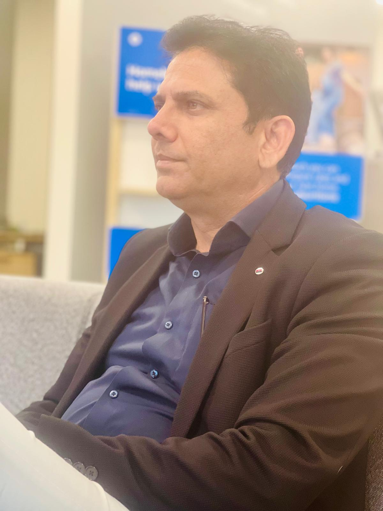

Aura
Accountable communication infrastructure
Typed accountability for institutional speech. Three speech modes, typed pointers for resolution and continuation, deterministic open-commitments engine. The audit is the platform.
Read more →Founder · Operations Executive · Platform Architect
Building systems for communication, accountability, continuity, and execution.
Three decades from military signals to operational leadership to platform creation. The thread across the work is the same: systems that report the truth of what was decided, what was done, and what was owed — so the substrate outlasts the moment.

01 · 1991–2000
Signals discipline. Long-cycle systems. The first grammar of accountability.
02 · 2003–2022
Two decades of large-scale procurement, tendering, and commercial execution.
03 · 2022–2025
Operational depth converted into platform thinking. Aura. Orchestrate. Bajwa Writes.
04 · 2026–
Founder & CEO, Aura Platform LLC. Continuity infrastructure for institutions.
The work
Each system holds a different kind of continuity. Discourse. Operations. Literature. The shape changes; the conviction does not — the substrate outlasts the moment.
Accountable communication infrastructure
Typed accountability for institutional speech. Three speech modes, typed pointers for resolution and continuation, deterministic open-commitments engine. The audit is the platform.
Read more →Revenue execution infrastructure
Governed operational continuity. Nine ordered blocker layers, seven dispatch decisions, eight rationale questions on every send. Risk only escalates; refusal is the substrate.
Read more →Literary & preservation infrastructure
Authored continuity. Append-only revisions. Bound editions sealed to their source revision. Canonical-JSON manifests with content-addressed URNs. The work outlasts the platform it ran on.
Read more →Doctrine
Two products are not a portfolio. Three are not a brand. They are evidence that the same governance pattern is general, not domain-specific — that communication, execution, and literature are three faces of one craft: keeping the record of what was decided, what was done, and what is still owed.
Beyond Artificial Intelligence
Artificial intelligence may be humanity's greatest invention, but it is not humanity's final destination.
The industrial age amplified human strength.
The digital age amplified human communication.
The AI age is amplifying human intelligence.
The next frontier is humanity itself.
As intelligence becomes increasingly abundant, the defining challenge of the coming century may no longer be what machines can do, but what humanity chooses to become.
I believe the next great technological era will focus on expanding human capability, agency, presence, longevity, and potential.
The mission is simple:
Create the infrastructure for humanity's next evolutionary leap.
This work remains exploratory and long-horizon, extending beyond current ventures, products, and institutions.
Selected works
Forthcoming
Once book-length works are sealed to revision at Bajwa Writes, their covers will appear here.